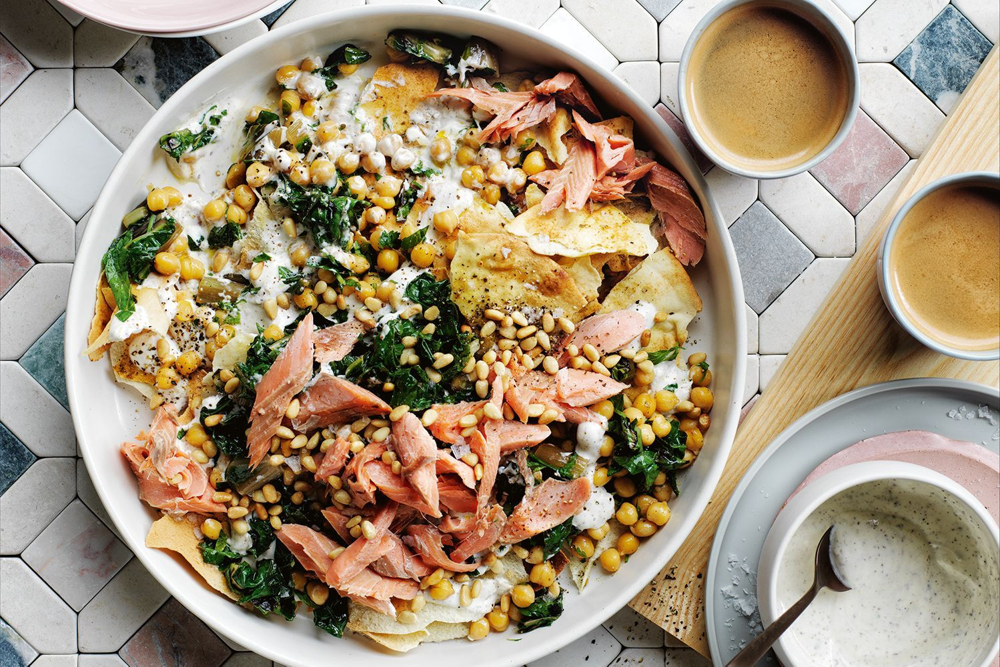
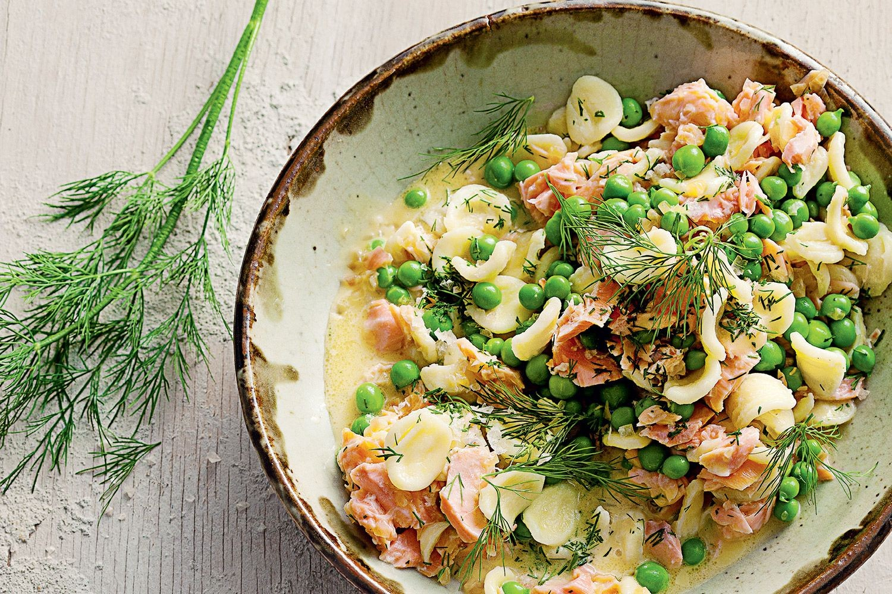

ALL INFORMATION AND IMAGES ON THIS WEBSITE ARE USED FOR EDUCATIONAL PURPOSES

Lemon chicken
Ingredients:
- 1 tsp cornflour
- 1 tsp dark soy sauce
- Zest & juice 1/2 small lemon
- 2 tsp coconut or canola oil
- 1 skinless chicken breast fillet
- 1 capsicum
- 1 medium carrot
- 100g broccoli
- 150ml chicken stock
- 4 spring onions
Method:
1. Mix the cornflour with the soy sauce and lemon juice in a small bowl.
2. Heat the oil in a large frying pan or wok over a high heat, add the chicken, capsicum, carrot and broccoli and stir-fry for 2–3 minutes, or until the chicken is lightly browned and the vegetables are beginning to soften.
3. Pour the lemon and soy mixture into the pan, add the chicken stock and spring onions and bring to a simmer. Reduce the heat and cook for 2 minutes, or until the sauce is slightly thickened and the chicken is cooked through, stirring regularly.
4. Sprinkle with grated lemon zest and serve with rice.
Iceberg with dried oregano and creamy milk cheese
Ingredients:
- 2 iceberg lettuces, outer leaves removed
- 1 bunch chives, snipped
- 1/2 bunch dill, fronds picked
- 50-70g creamy sheep’s milk feta (cow’s milk feta would be good too)
- 30g thinly sliced eschalot
- 50ml agrodolce-style white wine vinegar
- 1 tsp salt
- 1 1/ 2 tsp dried oregano
- 120ml extra-virgin olive oil
Method:
1. First, make your vinaigrette. In a small bowl or jar with a lid, combine the eschalot, vinegar and salt. Leave to macerate for about 15 minutes. Next, add the oregano and olive oil and mix or shake to combine.
2.Cut your iceberg into thin, long wedges and arrange on a platter. Shake the dressing up just before pouring it over the lettuce. Sprinkle a bit of salt on top, followed by the chives and dill, then shave slices of cheese over the whole thing, or simply crumble it in. Serve immediately.
Garlicky fried rice with crisp pork
Ingredients:
- 1/3 cup (80ml) peanut oil
- 4 garlic cloves, thinly sliced
- 300g minced pork
- 1/4 cup (80g) chilli bean sauce
- 1 bunch garlic chives, chopped
- 4 cups (580g) cooked jasmine rice or other long-grain rice
- Fried eggs, to serve
Method:
1. Heat oil in a wok over medium-high heat. Add garlic and cook for 2-3 minutes until golden. Remove using a slotted spoon and set aside. Add pork to the garlic oil in the wok and cook, breaking up mince with a wooden spoon, for 6-7 minutes until lightly caramelised. Add chilli bean sauce and cook for 2 minutes or until lightly caramelised. Add chives and rice and cook, tossing in the pan, for 3 minutes or until coloured. To serve, top with fried eggs and scatter with crisp garlic.

Tuna and caper pasta with crispy breadcrumbs
Ingredients:
- 150ml extra virgin olive oil
- 1 cup (70g) coarse day-old breadcrumbs
- 2 tsp dried Italian herbs
- 2 garlic cloves, finely chopped
- 2 tsp fennel seeds
- 1/3 cup (65g) capers in vinegar, drained
- 1/2 tsp chilli flakes
- 3 x 95g cans good-quality tuna in oil
- Zest & juice of 1 1/2 lemons
- 300g angel hair pasta
Method:
1. Heat half the oil in a non-stick frypan over medium heat. Add breadcrumbs and dried herbs. Cook, stirring, for 4-5 minutes until crisp and golden. Transfer to a bowl and set aside. Wipe pan clean and return to medium heat. Add remaining 75ml oil then add garlic and fennel seeds. Cook, stirring, for 2-3 minutes until fragrant and garlic has softened. Add capers, chilli flakes, tuna and tuna oil, lemon zest and juice, and stir for 1 minute to heat through.
2. Stir pasta through the sauce and season. Scatter with crispy breadcrumbs to serve.
Asian eggs
Ingredients:
- 1&1/2 cups (300g) long-grain rice
- 1/2 cup (75g) unsalted peanuts
- 100ml sunflower or peanut oil
- 8 eggs
- 1 bunch each coriander & Thai basil, leaves picked
- Bean sprouts, chopped birdseye chilli & lime wedges to serve
- 2 tsp chilli flakes
- 2 tbs each chilli oil, olive oil, soy sauce
- 1 garlic clove, crushed
- 2 tsp grated ginger
- 2 tsp fish sauce
Method:
1. Preheat oven to 180°C. Cook rice to packet instructions, then set aside.
2. Place peanuts on a baking tray and roast for 10 minutes or until light golden then remove, cool and roughly chop.
3. For the chilli paste, combine ingredients in a bowl and set aside.
4. Heat oil in a wok over medium-high heat. Crack one egg into a cup, then when the oil is hot, use the cup to pour the egg into the centre. Cook for 1 minute or until the outside starts to go golden but the yolk is still runny. Remove with a slotted spoon and repeat with remaining eggs.
5. Spoon rice onto dishes, top with eggs, peanuts, herbs and chilli sauce. Serve with bean sprouts, extra chilli and lime wedges.
Sesame butter radishes with lemon
Ingredients:
- 100g unsalted butter, chopped
- 2 tsp sesame oil
- 3 bunches mixed radishes, washed, trimmed
- Juice of 1 lemon, plus extra lemon wedges to serve
- 1 tbs each toasted black and white sesame seeds
- Bean sprouts, chopped birdseye chilli & lime wedges to serve
- Red vein sorrel, baby radish leaves, baby shiso and sourdough, to serve
Method:
1. Melt butter and oil in large frypan over medium-high heat and cook for 3 minutes or until nut brown. Add radish and cook, tossing pan, for 6-8 minutes or until tender. Spoon into a serving bowl.
2. Drizzle over lemon juice and scatter with sesame seeds and salad leaves. Serve with sourdough and extra lemon.
Peach and pancetta salad
Ingredients:
- 200g green lentils
- 2 bay leaves
- 200g flat pancetta
- 1/2 cup (125ml) extra virgin olive oil
- 1 eschalot, finely chopped
- 1 garlic clove, finely chopped
- Pinch of chilli flakes
- 2 thyme sprigs
- 1/4 cup (60ml) red wine vinegar
- 4 small peaches
- 1 bunch rocket, leaves picked
- 1/2 cup loosely packed mint
- 1/2 cup loosely packed parsley
- 1/2 cup loosely packed basil
- Crumbled goat’s cheese, to serve
Method:
1. Place a large saucepan, three-quarters full of water, over high heat. Bring to the boil and stir in lentils and bay leaves. Return to the boil, then reduce heat to medium and simmer for 15-20 minutes until lentils are just tender. Strain and run under cold water, then set aside to cool in a large bowl.
2. Place pancetta and 1 tbs olive oil in a large non-stick frypan over medium heat. Cook, stirring frequently, for 14-15 minutes until fat has rendered and pancetta is crispy. Remove from the pan and set aside.
3.Return pan to medium heat and add eschalot, garlic, chilli and thyme. Cook, stirring, for 3-4 minutes until eschalot is softened. Transfer to the bowl with the lentils, add red wine vinegar, remaining 85ml olive oil and season. Arrange lentil mixture on a serving platter and top with pancetta, peach, rocket and herbs.
4. Crumble over goat’s cheese to serve.
Egg noodles with Sichuan pepper chicken and cucumber
Ingredients:
- 3 x 180g chicken breasts
- 2/3 cup (165ml) light soy sauce
- 2 x 1cm-thick slices ginger
- 1 1/2 tsp Sichuan peppercorns
- 2 star anise
- 1/2 bunch spring onions
- 500g fresh thin egg noodles
- 2 small Lebanese cucumbers
- 1 tbs rice vinegar
- 1/4 cup (60ml) Chinese sesame paste
- 2 tbs Chinese black vinegar
- 1 tsp caster sugar
- Coriander leaves, white sesame seeds and pickled green chillies, to serve
- 2 long green chillies, chopped
- 1 bunch chives, choppe
- 1/2 bunch flat-leaf parsley, leaves chopped
- 3/4 cup (180ml) peanut oil
Method:
1. For the green chilli oil, combine all the ingredients except peanut oil in a food processor with 1/2 tsp salt and whiz to a rough paste. Add peanut oil and whiz until smooth. Set aside for 20 minutes to infuse. Strain through a muslin-lined sieve.
2. Place chicken, 1/2 cup (125ml) soy sauce, ginger, 1 tsp Sichuan peppercorns, star anise and chopped spring onions in a pan. Add enough water to just cover, then bring to a simmer over medium-high heat and cook for 5 minutes. Remove from heat and set aside for 20 minutes to cook through. Remove chicken, reserving 2 tbs poaching liquid, and slice. Set aside.
3. Meanwhile, cook noodles according to packet instructions, then drain and refresh in iced water. Combine cucumber and 1 tsp salt in a bowl. Set aside for 10 minutes to remove excess water. Drain, then combine with rice vinegar.
4. Combine with the sesame paste, black vinegar, sugar, reserved poaching liquid and remaining 2 tbs soy sauce. Toss the sauce with the noodles.
5. Divide noodles, chicken and cucumber among bowls. Drizzle over chilli oil and top with coriander and sesame seeds. Serve with pickled chillies on the side.

Quick chicken roast
Ingredients:
- 6 thyme sprigs, leaves picked
- 4 anchovies in oil, drained, chopped
- 2 teaspoons dried oregano
- 1 teaspoon chilli flakes
- 2 tablespoons olive oil
- 2 garlic cloves, chopped
- Finely grated zest of 1 lemon
- 8 chicken thighs (bone in, skin on)
- 800g baby kipfler potatoes
- 100g speck or streaky bacon, cut into 5mm-thick batons
- 250g baby truss tomatoes
Method:
1. Preheat the oven to 200C.
2. Combine the thyme, anchovies, oregano, chilli, oil, garlic and lemon zest in a bowl. Add the chicken and turn to coat. Add the potatoes and toss to combine. Place on a large baking tray and scatter over the speck.
3. Cut the zested lemon into wedges and add to the tray. Season and roast for 40 minutes or until chicken is golden and potatoes tender. Remove from the oven and top with tomatoes. Roast for a further 10-15 minutes until tomatoes are blistered.
4.Squeeze over roasted lemon juice to serve.
Penne all’arrabbiata
Ingredients:
- 100ml extra virgin olive oil
- 1 onion, finely chopped
- 3 garlic cloves, finely chopped
- 1 long red chilli, finely chopped, plus extra to serve
- 2 tbs tomato paste
- 1/3 cup (80ml) white wine
- 400g can cherry tomatoes
- 1/2 tsp dried oregano
- Juice of 1/2 lemon
- 400g penne
- 1/4 cup (60ml) cooking water reserved
- 1 tsp dried chilli flakes (optional), to serve
Method:
1.Heat oil in a large frypan over medium heat. Add onion and cook, stirring, for 3-4 minutes until softened. Stir in garlic, chilli and tomato paste, and cook, stirring, for 2 minutes or until fragrant. Add wine, tomatoes and oregano, and season. Simmer for 10-12 minutes until thick and reduced. Add lemon juice and pasta along with reserved cooking water, stirring to coat in the sauce. Scatter with extra chopped chilli, and dried chilli flakes (if using) to serve.
Orecchiette with walnut and pea pesto
Ingredients:
- 1 cup (100g) walnuts, roasted and cooled, plus extra chopped to serve
- 1 1/2 cups (180g) frozen peas, blanched and refreshed
- 3 tsp dried Italian herbs
- 3/4 cup (60g) finely grated parmesan
- 2 garlic cloves, crushed
- Juice of 1/2 lemon
- 1 cup (250ml) extra virgin olive oil
- 400g orecchiette
Method:
1. Place walnuts, peas, herbs, parmesan, garlic, lemon juice and 200ml oil in a blender, and whiz to a coarse paste. Season to taste and place in a large bowl.
2. Cook pasta in boiling salted water to packet instructions. Drain, reserving 2/3 cup (160ml) cooking water. Add pasta to the pesto in the bowl, then add reserved cooking water. Stir to coat. Top with extra chopped walnuts to serve.
Taleggio sourdough salad with simple salsa verde
Ingredients:
- 1 sourdough loaf
- 2 tbs olive oil
- 1 garlic clove, halved
- 100g Taleggio, rind removed, thickly sliced
- 2 bunches broccolini, trimmed, halved lengthways, blanched, refreshed
- 1 bunch asparagus, trimmed, halved lengthways, blanched, refreshed
- 1/2 cup loosely packed watercress sprigs
- 1/2 cup (70g) roasted hazelnuts, chopped
- Lemon wedges, to serve
- 1 bunch tarragon, leaves picked, plus extra to serve
- 1 bunch flat-leaf parsley, leaves picked
- 1/2 cup (125ml) extra virgin olive oil
- Juice of 1 lemon
Method:
1. For the simple salsa verde, place all ingredients and 1/2 tsp salt flakes in a food processor and whiz until smooth. Set aside.
2. Heat the oven grill to high heat. Rub sourdough slices with oil and place on a large baking tray. Grill, checking often, for 90 seconds each side or until golden. Rub toasted sourdough with cut side of garlic. Return sourdough to tray, placing some slices on their sides and some lying flat. Arrange Taleggio on top. Grill, checking often, for 1-2 minutes or until cheese has melted.
3. Arrange sourdough on a serving platter with broccolini, asparagus, watercress and hazelnuts. Drizzle with a little salsa verde and scatter with extra tarragon. Serve with lemon wedges and remaining salsa verde.
Valli Little's Cajun ocean trout with pineapple salad
Ingredients:
- 1 tsp each ground cumin, coriander, sweet smoked paprika (pimenton) and fennel seeds
- 2 tbs olive oil
- 4 x 150g ocean trout fillets, skin removed, pin-boned
- 1/2 pineapple, peeled, cored, thinly sliced
- 2 Lebanese cucumbers, cut into thin wedges
- 1 long red chilli, seeds removed, thinly sliced
- Juice of 1 lime
- 1/2 cup coriander leaves
Method:
1. Combine the spices, 1 tbs oil and 1 tsp salt in a large bowl. Add the fish, turning to coat, then set aside for 15 minutes to marinate.
2. Heat the remaining 1 tbs oil in a frypan over medium heat and cook the fish for 2-3 minutes each side until almost cooked through. Remove from the pan, loosely cover with foil, then set aside to rest for 5 minutes.
3. Meanwhile, place the pineapple, cucumber, chilli and lime juice in a bowl, season, then toss to combine. Place on a serving platter and flake the trout over the top. Sprinkle with coriander to serve.
Chopped chilli chicken stir fry
Ingredients:
- 1/4 cup (60ml) peanut or sunflower oil
- 250g purple eggplants, chopped if large
- 100g pea eggplants, blanched
- 1 bunch spring onion, sliced
- 1/4 cup (75g) gluten-free chilli paste or chilli sauce
- 2 long red chillies, thinly sliced
- 1 bunch Thai basil, leaves picked
- 500g chicken mince
- Steamed rice, to serve
- Fried eggs, to serve
Method:
1. Heat 2 tbs oil in a wok or large frypan over medium-high heat. Add eggplants, season and cook, stirring, for 3-4 minutes until golden. Remove from pan and set aside. Return pan to medium-high heat with remaining 1 tbs oil. Cook onion, chilli paste and half the chilli and basil, stirring, for 2-3 minutes until softened. Add chicken and cook, breaking up with a spoon, for 10 minutes or until browned. Return the eggplant to pan and toss to warm through.
2. Divide rice, chicken and eggs among plates. Top with remaining basil and chilli.
Thai red fish curry with noodles
Ingredients:
- 200g Pad Thai rice noodles
- 1/4 cup (60ml) peanut oil
- 600g firm boneless white fish fillets
- 2 garlic cloves, finely chopped
- 1/2 bunch spring onions, chopped, dark and pale parts separated
- 1 bunch coriander, leaves picked, roots chopped
- 1/4 cup (60ml) Thai red curry paste
- 1 tablespoon fish sauce
- 150g sugar snap peas
- 2/3 cup (165ml) coconut cream
- 1/2 cup (75g) chopped peanuts
- Bean sprouts, to serve
- Lime wedges, to serve
Method:
1. Soak noodles in hot water for 10 minutes or until soft, then drain. Set aside.
2. Heat 1 tablespoon oil in a wok over high heat and season the fish. Stir-fry half the fish for 2 minutes or until slightly golden, then transfer to a plate. Repeat with another 1 tbs oil and remaining fish.
3. Heat the remaining 1 tablespoon oil in the pan, then and add the garlic, white spring onion and coriander root. Stir-fry for 1-2 minutes until softened. Add the curry paste and stir-fry for a further 2 minutes or until fragrant, then add the fish sauce, sugar snap peas, 1/4 cup (60ml) water and cook for a further 2 minutes or until sauce is slightly reduced. Return the fish to the wok with coconut cream and remaining spring onion, then toss to combine and warm through.
4. Divide the noodles among 4 bowls and top with the fish curry. Serve immediately with coriander leaves, peanuts, bean sprouts and lime wedges.

Broad bean and pecorino bruschetta
Ingredients:
- 2kg fresh broad beans, podded (to give about 400g)
- 1/3 cup (80ml) olive oil, plus extra to brush
- 3 rosemary sprigs
- 3 garlic cloves, roughly chopped, plus 1 extra garlic clove, halved
- 1 loaf ciabatta, cut into 8 thick slices
- 2 tablespoons roughly chopped flat-leaf parsley
- 100g Pecorino Sardo or Pecorino Romano, shaved
Method:
1. Blanch broad beans in boiling salted water for 1 minute, then plunge into iced water and squeeze beans from skins. Set aside.
2. Warm oil, rosemary and chopped garlic in a pan over very low heat for 15-20 minutes, stirring occasionally, to infuse oil. Don’t allow garlic to colour.
3. Add beans, 1 tablespoon water and 1/2 teaspoon each salt and pepper. Increase heat to medium and cook for 2 minutes or until beans are cooked and bright green.
4. Meanwhile, preheat a chargrill pan or grill to high. Brush ciabatta with oil, then grill for 1-2 minutes each side until golden and charred. Rub halved garlic over toasts.
Garlic and spinach gnocchi with lemon and pecorino
Ingredients:
- 900g evenly sized maris piper or King Edward potatoes
- 100g garlic cloves
- 200g baby spinach
- 300g Tipo 00 flour, plus extra for dusting
- 2 large egg yolks
- 75g butter
- Juice of 1/2 lemon
- 50g pecorino, plus extra to serve
Method:
1. Preheat oven to 180°C. Wash the potatoes and dry well, then prick all over with a fork. Place in a roasting pan and bake for 1 hour or until cooked through.
2. Meanwhile, sit a steamer over a pan of boiling water. Add garlic, then cover and steam for 8 minutes. Add 75g spinach and steam for a further 2 minutes or until garlic is tender and spinach is wilted. Transfer to food processor and whiz to a puree. If mixture feels too wet, spoon into a muslin or clean tea towel and squeeze out excess liquid. Set aside.
3. Cool potatoes slightly, then peel and pass through a potato ricer while hot onto a clean work surface. (The potatoes need to be hot or the gnocchi will be stodgy.) Pile the flour on top of the potato, in a mound, and season generously. Make a well in the middle. Whisk the egg yolks and garlic puree together, then pour into the well. Using your hands, lightly bring all the ingredients together (don’t overwork the mixture or it will become tough). As soon as it comes together, clean and dry your hands and worktop for the next step.
4. Roll out gnocchi on a lightly floured surface to a rectangle, 1cm thick. Cut into 2cm strips, then cut into 2cm pieces.
5. Bring a large pan of salted water to the boil. Shred remaining 125g spinach leaves. Melt butter in a frypan over low heat and add the spinach. Cook gnocchi in two batches, for 2-3 minutes until they rise to the surface. Remove with a slotted spoon and add to the frypan of spinach. Repeat with remaining gnocchi. Add lemon juice, grate over pecorino, season and toss together. Serve with extra pecorino.
Chargrilled swordfish with grape, almond & barley salad
Ingredients:
- 1 1/4 cups (280g) pearl barley, rinsed
- Finely grated zest and juice of 1/2 lemon
- 2 tsp dried Italian herbs
- 100ml olive oil
- 4 x 220g swordfish fillets
- 1 1/2 tbs red wine vinegar
- 225g red seedless grapes, halved
- 1/2 cup (80g) roasted almonds, chopped
- 1/3 cup (60g) currants, soaked in warm water for 10 minutes, drained
- 1 bunch flat-leaf parsley, leaves picked
- 2 celery stalks, chopped
Method:
1. Cook barley in a saucepan of boiling salted water for 25-30 minutes until tender. Drain, then set aside to cool.
2. Meanwhile, combine lemon zest, 1 tsp Italian herbs and 2 tbs oil in a bowl. Season, add the swordfish and turn to coat, then set aside for 15 minutes to marinate.
3. To make the dressing, whisk vinegar, lemon juice and remaining 1/4 cup (60ml) oil together, season and set aside.
4. Preheat a barbecue or chargrill pan to high. Cook swordfish for 3 minutes each side or until just cooked. Rest, loosely covered with foil, for 5 minutes.
5. Combine barley, grapes, almonds, currants, parsley, celery and remaining 1 tsp Italian herbs. Drizzle over dressing and toss to combine.
6. Serve salad topped with swordfish.
Zucchini carpaccio
Ingredients:
- 500g mixed green and yellow zucchinis
- 100ml olive oil
- 2 tsp finely grated lemon zest, plus 2 tbs lemon juice
- 100g wild rocket leaves
- 1 1/4 cups (100g) shaved parmesan
Method:
1. Using a mandoline, thinly slice zucchini lengthways and place on a serving platter.
2. Whisk the oil, lemon zest and juice in a bowl and season.
3. Scatter rocket and parmesan over the zucchini, drizzle with dressing and season with freshly ground black pepper to serve.
Miso salmon with eggplant
Ingredients:
- 4 tablespoons white miso paste*
- 2 tablespoons honey
- 4 small (100g) skinless salmon fillets
- 2 tablespoons rice vinegar*
- 1 tablespoon peanut oil
- 100g snow peas, blanched
- 150g snow pea sprouts, trimmed
- 12 chargrilled eggplant slices, halved
- 1 tablespoon toasted sesame seeds
Method:
1. Mix together half the miso paste and half the honey and brush over fish.
2. Preheat a lightly oiled chargrill or barbecue to medium-high and cook salmon for 2 minutes each side until just cooked.
3. Meanwhile, mix the remaining miso paste and honey with vinegar and oil.
4. Combine the vegetables in a bowl and toss with dressing. Flake salmon and toss through the salad. Divide between bowls and top with sesame seeds.
Pumpkin and goat's cheese bruschetta with sage burnt butter
Ingredients:
- 1/2 butternut pumpkin (500g), peeled
- 2 tablespoons olive oil
- 1/2 teaspoon dried chilli flakes
- 6 slices sourdough bread
- 1 garlic clove, halved
- 150g soft goat's cheese
- 3/4 cup (250g) caramelised onion jam
- 50g unsalted butter
- 12 sage leaves
Method:
1. Preheat the oven to 180C. Place the pumpkin on a baking paper-lined baking tray and drizzle with 1 tbs oil, season and sprinkle with chilli flakes. Roast for 20 minutes or until golden and tender.
2. Heat a chargrill pan over high heat. Toast bread slices for 1-2 minutes each side until lightly charred. While still warm, rub both sides with garlic halves. Place toast on a baking tray. Spread each slice with goat’s cheese, top with caramelised onion and scatter with pumpkin pieces. Bake for 2 minutes or until warmed through.
3. Meanwhile, melt butter and remaining 1 tablespoons oil in a small frypan over medium heat. Add sage leaves and cook for 1 minute or until butter is browned and sage is crisp.
4. Drizzle bruschetta with sage burnt butter, and serve immediately.

Green tea noodles with sticky sweet chilli salmon
Ingredients:
- 1/2 cup (125ml) peanut oil
- 1 tbs finely chopped ginger
- 3 long green shallots, thinly sliced
- 1 lemongrass stalk (white part only), finely grated
- 1 1/2 tbs runny honey
- 2 tbs extra virgin olive oil
- 80g chilli paste in soybean oil
- 600g whole skinless salmon fillet, pin-boned
- 240g packet dried green tea noodles
- 1/3 cup (80ml) lime juice
- 2 1/2 tsp caster sugar
- 2 tsp fish sauce
- 1/2 tsp chilli flakes, plus extra to serve
- Toasted sesame seeds & micro shiso leaves, to serve
Method:
1. Preheat oven to 220°C. Heat peanut oil in a small saucepan over low heat. Add ginger, long green shallot, lemongrass and a pinch of salt. Cook, stirring occasionally, for 6-8 minutes until long green shallot is very soft but not coloured. Remove from heat and cool.
2. Meanwhile, combine honey, olive oil and chilli paste in a bowl. Stir to combine. Line a baking tray with baking paper and add salmon. Rub honey mixture over salmon to coat, then season. Roast for 12-15 minutes for medium. Set aside, loosely covered with foil, to rest for 5 minutes.
3. Cook noodles according to packet instructions. Drain and rinse briefly with warm water.
4. Whisk lime juice, sugar, fish sauce and chilli flakes into the shallot oil mixture. Place noodles in a large bowl with three quarters of the shallot oil, season and toss to combine. Arrange on a serving platter and flake salmon over the top. Drizzle over remaining shallot oil and scatter with extra chilli flakes, toasted sesame seeds and shiso leaves. Serve at room temperature or chilled.
Pipis in spicy lemongrass tomato broth
Ingredients:
- 1/3 cup (80ml) vegetable oil
- 4 eschalots, thinly sliced
- 4 garlic cloves, thinly sliced
- 1 lemongrass stalk, halved and bruised
- 2 kaffir lime leaves
- 5cm piece (25g) ginger, thinly sliced
- 5cm piece (25g) galangal, finely grated
- 1/2 bunch coriander, stems finely chopped, leaves picked and finely chopped
- 1 long red chilli, finely chopped, plus extra to serve
- 2 tbs fish sauce
- 2 tbs sambal oelek
- 500g ripe tomatoes, finely chopped
- 200g grape tomatoes
- 1kg pot-ready pipis, purged
- Lime wedges, to serve
Method:
1. Heat oil in a wok over high heat. Add eschalot, garlic, lemongrass, lime leaves, ginger, galangal, coriander stems and chilli, and cook for 5-6 minutes or until caramelised and fragrant. Add fish sauce, sambal oelek and tomatoes, and cook for 6-8 minutes until softened and juicy. Add the pipis, cover with a lid and cook for 6-7 minutes until the pipis have opened. Discard any unopened pipis. Serve topped with extra chilli, coriander leaves and lime wedges.

Sesame beef with gochujang udon noodles
Ingredients:
- 400g skirt beef steak
- 2 tsp sesame oil
- 400g udon noodles
- 50g unsalted butter, chopped
- 150g mixed Asian mushrooms, sliced
- 1/4 cup gochujang (Korean fermented chilli paste)
- 1 tbs tomato sauce
- 120g baby spinach leaves
- 1 bunch broccolini, cut in half on the diagonal, blanched
- Chopped nori & toasted sesame seeds, to serve
Method:
1. Place the skirt steak on a large oven tray, season with salt flakes and drizzle with the sesame oil. Leave steak to stand at room temperature for 30 minutes or until the fridge chill has gone.
2. Cook the udon noodles according to packet instructions, reserving 1 cup (250ml) of noodle water.
3. Heat a lightly greased barbecue or chargrill pan over high heat. Grill the steak for 3-4 minutes on each side until cooked to your liking. Remove from the heat and rest, loosely covered with foil, for 10-12 minutes.
4. Meanwhile, heat half the butter in a large non-stick frypan over medium-high heat. Add the mushroom and cook for 2-3 minutes until golden. Remove and set aside. Add the gochujang and tomato sauce to the pan and cook, stirring, for 1-2 minutes until the gochujang is lightly caramelised. Add the noodle water and bring to a simmer, cooking for 2-3 minutes until the liquid is slightly reduced.
5. Add the noodles, spinach and remaining butter, and stir until spinach is wilted and noodles are coated in the sauce.
6. Divide noodles among serving plates, top with sliced steak, broccolini, mushroom and nori. Sprinkle with sesame seeds to serve.

The Wood family's puttanesca
Ingredients:
- 100ml extra virgin olive oil
- 4 garlic cloves, thinly sliced
- 400g udon noodles
- 6 good-quality anchovies in oil, drained
- 80g tomato paste
- 1 tsp brown sugar
- 400g can whole peeled tomatoes
- 1/4 cup (60ml) red wine
- 1/2 tsp dried oregano
- 1/2 cup (75g) pitted kalamata olives
- 1/4 cup (50g) capers in vinegar, drained
- 400g bucatini pasta, cooked to packet instructions
Method:
1. Heat oil in a saucepan over low heat. Add garlic and anchovies, and cook, stirring occasionally, for 10-12 minutes until garlic has softened and the anchovies have melted. Add the tomato paste and brown sugar and increase heat to medium. Cook, stirring, for 5-7 minutes until the tomato paste has caramelised.
2. Add tomatoes, red wine and oregano, and bring to a simmer, breaking up tomatoes with a spoon. Simmer for 10-12 minutes, stirring occasionally, until thick and reduced. Add olives and capers, and simmer for 2 minutes. Season. Add hot pasta to the pan and coat in the sauce to serve.

Silverbeet fatteh with sumac yoghurt and chickpeas
Ingredients:
- 2 cups (400g) dried chickpeas, soaked overnight
- 3 large pieces Lebanese bread, cut into 4 large triangles
- 1/4 cup (60ml) extra virgin olive oil, plus extra to drizzle
- 1/2 bunch silverbeet, stalks removed
- 1 cup each mint leaves & flat-leaf parsley leaves, roughly chopped
- 1/2 cup (80g) toasted pine nuts
- 200g good-quality, hot smoked trout or salmon, flaked
- 1 cup (280g) natural yoghurt
- 1 tbs za’atar, plus extra to sprinkle
- 2 garlic cloves, crushed
- 2 1/2 tsp sumac
- Juice of 1/2 lemon
- 2 tbs pomegranate molasses
- Juice of 1 lemon
- 1/4 cup (60ml) extra virgin olive oil
Method:
1. Place chickpeas in a medium saucepan and cover with cold water. Bring to the boil over high heat, reduce to medium and simmer for 40-45 minutes until cooked. Keep warm.
2. Preheat oven to 180°C. Place Lebanese bread on a baking tray, drizzle with olive oil and sprinkle with extra za’atar. Bake for 10-12 minutes until golden and crisp.
3. For the yoghurt dressing, place yoghurt, za’atar, garlic, sumac and lemon in a bowl. Season to taste and mix to combine.
4. For the pomegranate dressing, place all the ingredients in a bowl, season to taste and stir to combine.
5. Preheat a chargrill pan or barbecue to high. Drizzle silverbeet with extra oil, season and chargrill for 4-5 minutes until wilted and a little charred. Roughly chop and place in a bowl with chickpeas and herbs. Drizzle over pomegranate dressing, season and toss to combine.
6. Place pita on a serving plate, spoon over yoghurt dressing and layer with silverbeet salad. Scatter over pine nuts and smoked trout to serve.
tomato vodka rigatoni
Ingredients:
- 1/4 cup (60ml) extra virgin olive oil
- 1 onion, finely chopped
- 4 garlic cloves, thinly sliced
- 3/4 cup (210g) tomato paste
- 1/2 cup (125ml) vodka
- 1/4 cup (60ml) thickened cream
- 1/2 cup (40g) finely grated parmesan
- 400g rigatoni, cooked to packet instructions
- 1/4 cup (60ml) cooking water reserved
Method:
1. Heat oil in a large non-stick frypan over medium heat. Add onion and garlic, and cook, stirring, for 5-6 minutes until softened. Add tomato paste and stir for 2 minutes or until lightly caramelised.
2. Add vodka and cook for 4-5 minutes. Stir in cream, parmesan and 1/4 cup (60ml) reserved cooking water, and bring to a simmer. Remove from the heat and season to taste. Stir through rigatoni to coat in the sauce then serve immediately.

bolognese and chilli linguine
Ingredients:
- 500g linguine
- 1/2 cup (125ml) olive oil
- 4 tbs unsalted butter
- 2 eschalots, finely chopped
- 4 garlic cloves, finely chopped
- 2 red chillies, finely chopped
- 400g spanner crab meat
- Zest & juice of 1 lemon
- 1 cup loosely packed flat-leaf parsley, finely chopped
- 2 tsp chilli flakes
Method:
1. Cook the linguine according to the packet instructions. Drain, reserving half a cupful of the cooking water.
2. Meanwhile, heat oil and butter in a large frying pan and gently cook the shallots, garlic and chillies until slightly softened and fragrant. Add the linguine and pasta water and toss gently to completely coat.
3. Fold in the crab meat. Stir in the lemon juice and half the parsley and season to taste. Serve in bowls, sprinkled with the remaining parsley, lemon zest, chilli flakes and freshly ground black pepper.

Tofu scramble with shredded cabbage and chilli sambal
Ingredients:
- 2 tbs light-flavoured oil
- 2 garlic cloves, crushed
- 2.5cm piece fresh ginger, peeled, grated
- 4 spring onions, finely chopped
- 1 1/2 tsp each curry powder, ground turmeric & ground coriander
- 560g silken tofu, drained
- 5 red chillies, roughly chopped
- 4 garlic cloves, roughly chopped
- 2.5cm piece galangal, peeled and roughly chopped
- 2.5cm piece fresh ginger, peeled and roughly chopped
- 1 large eschalot, roughly chopped
- 3 tbs light-flavoured oil
- 1 tbs chilli flakes
- 60g palm sugar, crumbled or grated
- 2 tsp tamarind paste
- 1 tbs tamari
- Juice of 1/2 lime
- 1/4 firm white cabbage, shredded
- 1 medium cucumber, peeled into ribbons
- 1/2 cup each loosely packed mint & coriander leaves
- Juice of 1 lime
- Olive oil
- 4 slices sourdough bread
- 1/3 cup crispy shallots
Method:
1. For the chilli sambal, mix the chillies, garlic, galangal, ginger and eschalot to a paste in a small food processor or mortar and pestle. Heat the oil in a frying pan over medium heat and fry the paste for 5-8 minutes until dark red and fragrant. Add the chilli flakes and palm sugar and stir to dissolve the sugar. Add the tamarind paste and tamari and cook for a further 2-5 minutes until the sauce is thick. Remove from the heat, add the lime juice and leave to cool. This can be stored in the fridge for up to a month.
2. To make the tofu scramble, heat the oil in a large non-stick frying pan over medium-high heat. Fry the garlic and ginger for 1 minute, then add the spring onions, curry powder, turmeric and coriander and fry, stirring, for a further minute. Crumble in the silken tofu and stir to coat in the spice mixture – the tofu will look like scrambled eggs.
3. Toss together the cabbage, cucumber and herbs with the lime juice and a good splash of olive oil. Season well.
4. Toast the bread under a hot grill until golden. Top each slice of toast with tofu and add a handful of cabbage, cucumber and herbs. Sprinkle with crispy shallots and serve with a generous spoonful of chilli sambal.
Eggplant kasundi warm rice salad
Ingredients:
- 1/2 cup (125ml) olive oil
- 1 tsp each cumin seeds, caraway seeds, fennel seeds & nigella seeds
- 1 tbs brown mustard seeds
- 24 fresh curry leaves
- 1 onion, finely chopped
- 1 tbs finely grated ginger
- 3 garlic cloves, crushed
- 600g eggplant, cut into 1cm pieces
- 2 tbs each curry powder, brown sugar & white vinegar
- 2 x 400g cans cherry tomatoes
- 400g can chickpeas, rinsed, drained
- 1/2 cup (140g) thick Greek-style yoghurt
- Juice of 1/2 a lemon
- 1 Lebanese cucumber, thinly sliced into rounds
- Mint leaves, to serve
- 250g basmati rice
- 4 cardamom pods
- 2 star anise
Method:
1. Heat oil in a saucepan over medium heat. Add seeds and curry leaves. Cook for 2 minutes or until mustard seeds start to pop. Add the onion, ginger and two-thirds garlic. Cook 3-4 minutes until onion has softened. Add eggplant, curry powder and sugar. Cook 8-10 minutes until eggplant has softened slightly.
2. Stir in vinegar, half the tomatoes and 1 cup (250ml) water. Bring to the boil. Reduce heat to mediumlow and simmer, loosely covered, for 25 minutes or until eggplant is very tender. Stir in chickpeas and remaining tomatoes.
3. For the rice, combine all ingredients with 2 cups (500ml) cold water and 1 tsp salt flakes in a pan over high heat. Bring to the boil. Reduce heat to low, cover and cook, without stirring, for 12 minutes or until water has been absorbed and rice is tender. Uncover and stir with a fork.
4. For dressing, combine yoghurt, lemon juice and remaining garlic in a small bowl.
5. Place rice in a bowl. Top with eggplant and cucumber. Drizzle over dressing and scatter with mint. Toss to serve.
Summer chopped salad with citrus sesame dressing
Ingredients:
- 2 corn cobs
- 1 tbs olive oil
- 2 small zucchini, chopped
- 1/4 small white cabbage, finely sliced
- 2 small Lebanese cucumbers, chopped
- 2 small beetroots, cooked, cut into wedges
- 1 small iceberg lettuce, roughly chopped
- 1/4 cup (60ml) apple cider vinegar
- 120g edamame beans, blanched
- 1/3 cup loosely packed dill sprigs & flat-leaf parsley leaves
- 2 spring onions, finely chopped
- 1/3 cup (4 tbs) furikake or nori sesame topping
- 1 garlic clove, finely chopped
- 1 1/2 tbs tahini
- 1 tbs tamari
- 1/4 cup (60ml) rice wine vinegar
- 1 tbs ponzu sauce
- 2 tbs light-flavoured oil
- 1 tsp sesame oil
- 1 tbs wasabi paste
- 1 Asian (red) eschalot, finely chopped
- 2 cups (500ml) light-flavoured oil, to deep-fry
- 400g can chickpeas, drained
- 1 tbs furikake or nori sesame topping
Method:
1. Cut the corn cobs in half and simmer in a large pan of water for 8 minutes, then drain and cool. Cut off the kernels.
2. Heat a little olive oil in a hot pan, add the corn kernels and zucchini and cook until the zucchini is just starting to soften and colour.
3. Meanwhile, make the citrus sesame dressing. Whisk the garlic, tahini, tamari, vinegar and ponzu in a bowl. Slowly add the oils, whisking continuously until emulsified. Whisk in the wasabi and then stir in the eschalot.
4. To deep-fry the chickpeas, heat oil in a large heavy-based pan until a breadcrumb dropped in sizzles. Carefully add chickpeas and fry for 2 minutes, or until they start to blister. Drain in a bowl lined with paper towel. Season with the furikake while still hot and leave to cool completely. (You can store them in an airtight container for up to a day – they make an excellent snack.)
5. Arrange cabbage, cucumber, beetroot and lettuce in a bowl, add apple cider vinegar and toss well. Top with corn, zucchini and edamame. Drizzle over sesame dressing and finish with chickpeas, dill, parsley, spring onions and furikake.

Orecchiette with hot-smoked salmon, peas and beurre blanc sauce
Ingredients:
- 400g orecchiette or other short dried pasta
- 1/3 cup (80ml) white wine
- 1/3 cup (80ml) white wine vinegar
- 2 eschalots, finely chopped
- 175g chilled unsalted butter, chopped
- 1 cup (120g) frozen peas
- 250g hot-smoked salmon or trout fillets, skin removed, flaked
- 2 tbs thickened cream
- 2 tbs chopped dill, plus extra sprigs to serve
Method:
1. Cook pasta in a saucepan of boiling salted water according to the packet instructions until al dente. Drain, reserving 1/4 cup (60ml) cooking liquid.
2. Meanwhile, to make beurre blanc sauce, place wine, vinegar and eschalot in a saucepan over medium-low heat. Cook for 3-4 minutes until liquid is reduced to 1 tbs. Whisking constantly, add the butter, 1 piece at a time, until mixture is thick. Remove from heat and cover to keep warm. Blanch peas in boiling salted water for 1 minute. Refresh under cold running water, then drain well.
3. Combine pasta with the beurre blanc sauce in a serving bowl, adding a little of the reserved cooking liquid to loosen, if necessary. Add peas, salmon, cream and dill, then gently toss to combine. Serve garnished with extra dill sprigs.
Minty lamb with beetroot and charred broccoli
Ingredients:
- 1/2 bunch mint, leaves chopped
- 1/2 bunch flat-leaf parsley, leaves chopped
- 1/4 cup (40g) pine nuts, toasted
- 2 tbs grated parmesan
- 1 garlic clove, finely chopped
- 2/3 cup (165ml) olive oil, plus extra to brush
- 12 x French-trimmed lamb cutlets
- 3 tsp dried mint
- 1 Kurrawong Organics broccoli, sliced lengthways
- 11/2 tbs lemon juice
- 100g watercress
- 2 Kurrawong Organics beetroots, cut into thin matchsticks
- 120g marinated feta, drained, crumbled
Method:
1. Whiz the fresh mint, parsley, pine nuts, parmesan and garlic in a food processor until a paste. Gradually add 1/2 cup (125ml) oil and whiz until combined. Set aside.
2. Brush lamb with a little extra oil, then season and coat in dried mint. In a separate bowl, toss broccoli and 1 tbs oil. Preheat a chargrill pan to medium-high heat.
3. Cook broccoli, turning, for 3-4 minutes until lightly charred. Set aside. Cook lamb for 4 minutes each side for medium-rare or until cooked to your liking.
4. Whisk the lemon juice and remaining 1 tbs oil together in a bowl. Season.
5. Arrange broccoli, watercress, beetroot and feta on a platter. Top with the lamb, then drizzle over lemon dressing and mint pesto to serve.
Sardines stuffed with kale, pine nuts and raisins
Ingredients:
- 2 cups (50g) shredded kale
- 2 tbs each raisins and pine nuts
- 1 garlic clove, crushed
- Finely grated zest of 1/2 lemon, plus 2 lemons, halved
- 12 sardines, cleaned
- 2 (600g) sweet potatoes, peeled, cut into 8mm matchsticks
- 1/3 cup (80ml) olive oil, plus extra to brush
- 1 tbs finely chopped flat-leaf parsley leaves
- 2 tbs panko breadcrumbs
Method:
1. Preheat the oven to 200°C. Place the kale in a heatproof bowl and cover with 1 cup (250ml) boiling water. Stand for 1 minute, then drain and refresh under cold running water. Squeeze to remove excess liquid. Transfer to a large chopping board, or food processor with raisins, pine nuts, garlic and lemon zest, and roughly chop, tossing to combine. Stuff sardine cavities with kale mixture, then place on a baking paper-lined baking tray. Set aside.
2. To make fries, combine sweet potato and 2 tbs oil in a bowl. Season. Divide between 2 baking paper-lined baking trays. Roast for 25-30 minutes, tossing once, until golden. Toss with chopped parsley. Keep warm.
3. Increase heat to 210°C. Sprinkle sardines with breadcrumbs and drizzle with the remaining 2 tbs oil. Roast for 10-15 minutes until golden and cooked through.
4. Meanwhile, preheat a chargrill pan over medium-high heat. Brush the cut sides of halved lemons with extra oil. Cook, cut-side down, for 2-3 minutes until lightly charred.
5. Serve sardines with sweet potato fries and chargrilled lemons to squeeze over.

Raw pad Thai
Ingredients:
- 1 small zucchini, spiralised or grated
- 2 carrots, spiralised or grated
- 1 red capsicum, seeds removed, very thinly sliced
- 1 cup (80g) finely shredded white cabbage
- 100g snow peas, trimmed, thinly sliced lengthways
- 1 cup (80g) bean sprouts, trimmed
- 1 cup (150g) frozen podded edamame, thawed
- 1 cup Thai (holy) basil leaves
- tbs toasted seed mix in shoyu
- 1 garlic clove, crushed
- 1/4 cup (70g) almond butter or pure peanut butter
- 2 tbs lime juice
- 21/2 tbs pure maple syrup
- 1/2 tbs sesame oil
- 1 tsp grated ginger
Method:
1. For the dressing, place all the ingredients in a blender with 2 tbs filtered water and whizz to combine, adding a little more water to thin the mixture if necessary. Season and set aside.
2. Place the zucchini, carrot, capsicum, cabbage, snow peas, bean sprouts and edamame in a large bowl. Add the dressing and toss to combine. Divide among serving plates, top with the basil and serve with toasted seed mix.

Mixed mushroom noodles with tea-marbled eggs
Ingredients:
- 1 tsp Chinese five-spice powder
- 1/2 cup (125ml) dark soy sauce
- 2 tsp brown sugar
- 3 star anise
- 2 black tea bags
- 4 eggs
- 500g yang chun dried wheat noodles
- 1 bunch bok choy, quartered lengthways
- 1/3 cup (80ml) peanut oil
- 500g mixed Asian mushrooms, such as enoki, oyster and shiitake
- 2 garlic cloves, crushed
- Black sesame seeds and micro radish, to serve
- 1 garlic clove, crushed
- 2 tbs each rice vinegar and peanut oil
- 1 tbs soy sauce
- 2 tsp each sesame oil, chilli oil and finely grated ginger
- 1 tsp caster sugar
Method:
1. Place five-spice powder, soy sauce, sugar, star anise, tea bags and 1.5L (6 cups) water (or enough to cover eggs) in a pan and bring to the boil over medium heat. Add eggs and cook for 3 minutes to par-cook, then remove from pan and cool slightly under cold running water. Using the back of a spoon, lightly crack shells, keeping shells intact (this creates veins). Carefully return eggs to boiling liquid and cook for a further 2 minutes. Remove pan from heat and set aside to cool in liquid (residual heat will continue cooking eggs). Chill for at least 2 hours or overnight. Discard liquid. Peel eggs and set aside.
2. Cook the noodles according to packet instructions, then drain and refresh in iced water. Chill until ready to use.
3. Blanch bok choy in a saucepan of boiling salted water for 30 seconds, then drain and refresh in iced water.
4. For the dressing, combine all the ingredients in a bowl and set aside.
5. Heat 2 tbs oil in a large frypan over high heat. Add half the mushrooms, then season and cook for 3 minutes or until slightly charred. Add garlic and cook for 30 seconds or until fragrant, then transfer to a bowl. (If using enoki mushrooms, cook separately for 1 minute.) Repeat with remaining 2 tbs oil and mushrooms.
6 Divide noodles, bok choy, mushrooms and eggs among bowls. Drizzle with dressing and sprinkle with sesame seeds and micro radish to serve.